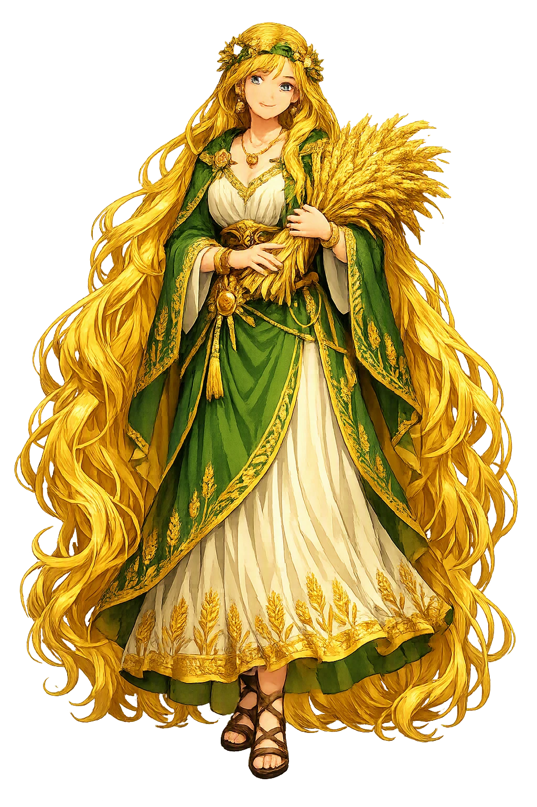
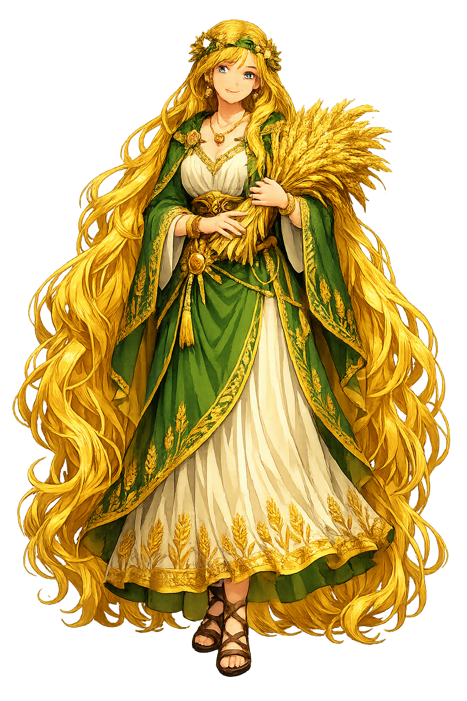

Unicode restoration and ASCII comparison
ᛋᛁᚠ
The name in its original Norse form. Sif (ᛋᛁᚠ) is attested in the source tradition — “Relation by marriage”. Its original diacritics and script distinctions carry the full phonetic and orthographic weight of the source tradition.
sif
The plain sif form is identical to the Unicode restoration. Because this name is already written in Latin letters, no diacritics, stress, or script information were lost — only capitalization differs.
Sif
The Unicode restoration does not need to recover lost marks for Sif. Its value is canonical spelling and consistent cataloguing, not the reconstruction of erased orthography. The domain is readable as-is to both DNS and humanity.
Sif.com → sif.com
The non-ASCII characters in Sif are encoded while the ASCII remains visible. To the DNS, it is Punycode. To humanity, it is Sif.
How Sif travels from ancient script to the modern URL
Owned, ideal, and ASCII forms of Sif
Sif
Restores ᛋᛁᚠ. The full Unicode restoration. sif.com is not in the PuniCodex collection — it is watched for release; if it drops, this temple upgrades to an owned flagship.
How Sif was spoken
The Golden-Haired Wife of Thor
Sif, the golden-haired wife of [[thor|Þórr]], is one of the quietest figures in the Edda and one of the most consequential. When [[loki|Loki]] sheared off her hair in mischief, Þórr's rage forced the trickster down to the dwarfs — and the forges that answered made not only her new hair of living gold but Gungnir, Skíðblaðnir, Draupnir, Gullinbursti, and Mjölnir itself. Her name is the Old Norse word for kinship-by-marriage, sif, and the corpus keeps her exactly there: the bond at the centre of the thunder-god's house, mother of [[ullr|Ullr]], counted mother of Þrúðr, the one voice in Lokasenna that pours Loki mead and speaks him fair.
The hair of wrought gold the sons of Ívaldi made for Sif, which grew to her head like living hair — Loki's shearing undone by dwarfish craft, and the seed of every treasure that followed.
The cup of ancient mead Sif herself poured for Loki in Ægir's hall, hailing him in the one courteous speech of Lokasenna — answered, as courtesy was there, with slander.
The hammer of Þórr, forged by Brokkr and Sindri in the contest Loki set running when he cut Sif's hair — the greatest weapon of the Æsir, born of a theft undone.
The archer on skis, god of the yew-bow, whom Gylfaginning names as Sif's son and Þórr's stepson — proof of a union before the thunder-god, of which the sources say nothing more.
Stories of Sif
Sif's mythology is short in line-count and enormous in consequence: one act of malice against her sets the forges of the dwarfs to work, and the gods' six greatest treasures come out of the fire. Snorri tells the hair-myth whole; the Poetic Edda gives her two smaller scenes — a cup of mead poured for Loki, and a taunt flung at Þórr across the water — and Gylfaginning names her son. Beyond that the corpus is silent, and the silence is data: the tradition kept her at the centre of Þórr's household and gave her no wars of her own.
Loki Laufeyjarson, Snorri begins, did this for mischief: he cut off all Sif's hair. When Þórr came home and learned it, he seized Loki and would have broken every bone in him, had Loki not sworn to go to the svartálfar and have them make for Sif a head of hair from gold — hair that would grow like other hair. So Loki went to the dwarfs called the sons of Ívaldi, and they made the hair, and it grew to her head the moment it was set there, as if it were her own.
The episode is told in a handful of sentences, but its logic is exact: the injury is domestic, the redress is craft, and the restitution exceeds the loss. Sif does not speak in her own myth — the shearing, the oath, and the making all happen around her — and the tradition leaves her golden hair standing where nature left the first.
The sons of Ívaldi did not stop at the hair: in the same commission they made Gungnir, the spear that never misses, for [[odinn|Óðinn]], and Skíðblaðnir, the best of ships, for [[freyr|Freyr]]. Then Loki wagered his own head with the dwarf Brokkr that Brokkr's brother Sindri could not make three treasures as good. In the forge Sindri laid gold, a boar's hide, and iron in the fire in turn, while Loki, in fly-shape, stung the bellows-worker — and out came Draupnir the dripping ring, Gullinbursti the golden-bristled boar, and Mjölnir, the hammer whose handle came short only because the fly stung Brokkr's eyelid at the last draw.
The Æsir judged Mjölnir the best of all the treasures, because with it the gods have their surest defence against the rime-giants. Loki saved his head on a quibble — his neck was not in the wager — and had his lips sewn up for the pleasure of it. Count the consequence of one shorn head of hair: the spear of Óðinn, the ship of Freyr, the ring, the boar, and the hammer of [[thor|Þórr]] all exist because Sif lost her hair.
In Ægir's hall, as Loki works down the company with slander and no one escapes — not the serving-woman Fimafengr, not the gods' wives — Sif alone rises and pours him mead in a crystal cup, and speaks the flyting's one courteous stanza: 'Hail to thee, Loki, and take the crystal cup, full of ancient mead; so may you say that I alone, among the Æsir's kin, am without blame.' It is a bid for exemption, gracefully made, by the one person in the hall who tries hospitality instead of abuse.
Loki's answer is the flyting's coldest stroke: he grants she would be blameless indeed, wary and shy of men, were it not that he knows one who lay with her and drew the mighty Þórr's wife from home — 'and that was I, wretched one.' Whether the charge is truth or the poem's purest malice the text does not say; the Poetic Edda offers the accusation and no verdict, and Sif speaks no second stanza.
In Hárbarðsljóð, Óðinn in ferryman's disguise keeps Þórr waiting on the wrong side of the sound, and among the gibes he flings across the water is one aimed at the home Þórr cannot get back to: 'Sif has a lover at home; him you will want to meet.' The poem gives the charge no support and no sequel — it is one dart in a long volley, meant to sting a husband detained abroad, and it leans on the same rumour Lokasenna spent a stanza on.
Between the two poems the scholarly tradition has made what little can honestly be made: the eddic poets twice insinuate and never narrate, and no surviving myth shows Sif unfaithful. The taunts are evidence about the poets' taste for needling Þórr, not about the goddess.
In Snorri's catalogue of the Æsir comes the genealogy that opens the one door in Sif's story: '[[ullr|Ullr]] is the name of a son of Sif and a stepson of Þórr. He is such a good archer and so fast on skis that no one can compete with him; he is also fair of face and has a warrior's skill.' Stepson — the word is the whole of it. Sif had a child before the thunder-god, by a father no source names, and the speculation that has filled the gap since (a frost-god, an older husband of the earth) is speculation, not attestation.
Snorri's kennings keep the household straight thereafter: Þórr is 'husband of Sif, stepfather of Ullr, father of [[modi|Móði]] and [[magni|Magni]] and Þrúðr' — Magni by the giantess Járnsaxa, Þrúðr counted as Sif's daughter in the reference tradition. The goddess whose name means kinship-by-marriage presides, appropriately, over the Edda's most blended household.
Sif is the Edda's study in how much weight a silent figure can bear. She speaks one stanza in the whole corpus — a cup of mead, a courteous wish to be counted blameless — and is answered with the flyting's crudest accusation. She is sheared, restored, taunted about, and never once given an adventure of her own; and yet the tradition built the gods' entire armoury on her injury. Gungnir, Skíðblaðnir, Draupnir, Gullinbursti, Mjölnir: take away Loki's shears and the Æsir face Ragnarǫk unarmed. The myths do not say this. They simply arrange that the greatest weapons in the North descend from a wrong done to the woman whose name means kinship.
Enter Extended Lore